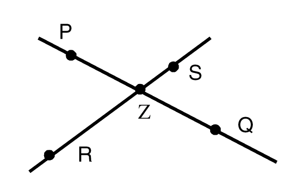
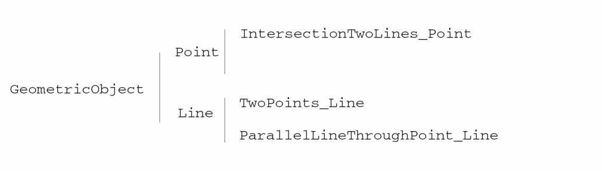

17
17
Programming Examples
编程示例
See the following sections for programming examples:
请参阅以下各节的编程示例：
-
List Manipulation
列表操作 -
Symbol Manipulation
符号操作 -
Sorting a List of Points
点列表排序 -
Computing the Center of a Bounding Box
计算边界框的中心 -
Computing the Area of a Bounding Box
计算边界框的面积 -
Computing a Bounding Box Centered at a Point
计算以某点为中心的边界框 -
Computing the Union of Several Bounding Boxes
计算多个边界框的并集 -
Computing the Intersection of Bounding Boxes
计算边界框的交集 -
Prime Factorizations
质因数分解 -
Fibonacci Function
斐波那契函数 -
Factorial Function
阶乘函数 -
Exponential Function
指数函数 -
Counting Values in a List
统计列表中的值出现次数 -
Counting Characters in a String
统计字符串中的字符数 -
Regular Expression Pattern Matching
正则表达式模式匹配 -
Geometric Constructions
几何构造 -
Examples of How to use Custom Specializers in SKILL++ Methods
在 SKILL++ 方法中使用自定义特化器的示例
List Manipulation
列表操作
A list is a linear sequence of Cadence® SKILL language data objects. The elements of a list can have any data type, including symbols or other lists. The printed presentation for a SKILL list uses a matching pair of parentheses to enclose the printed representations of the list elements. The trListIntersection and trListUnion functions illustrate
列表是 Cadence® SKILL 语言数据对象的线性序列。列表元素可以是任意数据类型，包括符号或其他列表。SKILL 列表的打印表示使用一对匹配的圆括号来包围各列表元素的打印表示。trListIntersection 与 trListUnion 函数展示了：
-
Documenting at the function level
在函数级别编写文档 -
Using the
setoffunction
使用setof函数 -
Using the
memberfunction
使用member函数
The trListUnion function also illustrates the nconc function, which destroys all but its last argument. In this case, the first argument is a new, anonymous list created by the setof function.trListUnion 函数还展示了 nconc 函数。该函数会破坏除最后一个参数之外的所有参数。在这里，第一个参数是由 setof 函数创建的新匿名列表。
procedure( trListIntersection( list1 list2 )
setof( element list1
member( element list2 )
) ; setof
) ; procedure
procedure( trListUnion( list1 list2 )
nconc(
setof( element list2
!member( element list1)
) ; setof
list1
) ; nconc
) ; procedure
trListIntersection( ‘(a b c) ‘(b c d)) => (b c)
trListUnion( list(1 2 3) list(3 4 5 6)) => ( 4 5 6 1 2 3)
Symbol Manipulation
符号操作
A symbol is the primary data structure within SKILL. A SKILL symbol has four data slots: the name, the value, the function definition, and the property list. Except for the name slot, all slots can be empty.
符号（symbol）是 SKILL 中的主要数据结构。一个 SKILL 符号有四个数据槽：名称（name）、值（value）、函数定义（function definition）以及属性列表（property list）。除名称槽外，其余槽都可以为空。
The trReplaceSymbolsWithValues function makes a copy of an arbitrary SKILL expression, in which all references to a symbol are replaced by the symbol’s value.trReplaceSymbolsWithValues 函数会复制任意 SKILL 表达式，并将其中对符号的所有引用替换为该符号的值。
a = "one" b = "two" c = "three"
testCase = '( 1 2 ( a b ) )
trReplaceSymbolsWithValues( testCase ) => (1 2 ("one" "two"))
testCase = '(1 ( a ( c )) b )
trReplaceSymbolsWithValues( testCase ) => (1 ("one" ("three")) "two")
The trReplaceSymbolsWithValues illustratestrReplaceSymbolsWithValues 展示了：
-
Using recursion to process an arbitrary SKILL expression, making a copy of the expression in which all references to a symbol are replaced by the symbol’s value.
使用递归处理任意 SKILL 表达式，生成一个副本，并将其中对符号的所有引用替换为该符号的值。 -
How the
condfunction handles several possibilities.cond函数如何处理多种可能情况。
The listp function determines whether the expression is a list.listp 函数用于判断该表达式是否为列表。
The symbolp function determines whether the expression is a list.symbolp 函数用于判断该表达式是否为符号。
The symeval function retrieves the value of the expression, provided it is a symbol.
如果表达式是符号，symeval 函数会取回该符号的值。
In the general case, the cond function recursively descends into the car of the expression and the cdr of the expression and builds a list from the results.
在一般情况下，cond 会递归地深入表达式的 car 与 cdr，并将结果组装成列表。
procedure( trReplaceSymbolsWithValues( expression )
cond(
( null( expression ) nil )
( symbolp( expression ) symeval( expression ) )
( listp( expression )
cons(
trReplaceSymbolsWithValues( car( expression ))
trReplaceSymbolsWithValues( cdr( expression ))
)
)
( t expression )
) ; cond
) ; procedure
x = 5
a = 1
trReplaceSymbolsWithValues( ‘(x a))
=> (5 1)
Sorting a List of Points
点列表排序
The trPointLowerLeftp function indicates whether pt1 is located to the lower left of pt2. This function illustratestrPointLowerLeftp 函数用于判断 pt1 是否位于 pt2 的左下方。该函数展示了：
-
Documenting at the function level
在函数级别编写文档 -
Using the
xCoordandyCoordfunctions
使用xCoord与yCoord函数 -
Using the
condfunction
使用cond函数procedure( trPointLowerLeftp( pt1 pt2 ) let( ( pt1x pt2x pt1y pt2y ) pt1x = xCoord( pt1 ) pt2x = xCoord( pt2 ) cond( ( pt1x < pt2x t ) ( pt1x == pt2x pt1y = yCoord( pt1 ) pt2y = yCoord( pt2 ) pt1y < pt2y ) ( t nil ) ) ; cond ) ; let ) ; procedure
trPointLowerLeftp( 0:0 100:100) => t
trPointLowerLeftp( 100:100 0:0) => nil
The trSortPointList function returns a list of points sorted destructively and illustratestrSortPointList 函数返回一个以破坏性方式排序后的点列表，并展示了：
-
Documenting at the function level
在函数级别编写文档 -
Using the
sortfunction
使用sort函数procedure( trSortPointList( aPointList ) sort( aPointList 'trPointLowerLeftp ) ); procedure
x = list(100:0 100:100 0:0 50:50 0:100) trSortPointList( x ) => (( 0 0) (0 100) (50 50) (100 0) (100 100))
Computing the Center of a Bounding Box
计算边界框的中心
The trBBoxCenter function returns the point at the center of a bounding box and illustratestrBBoxCenter 函数返回边界框中心点，并展示了：
-
Documenting at the function level
在函数级别编写文档 -
Using the
xCoordandyCoordfunction
使用xCoord与yCoord函数 -
Using the
lowerLeftandupperRightfunction
使用lowerLeft与upperRight函数 -
Using the colon (:) operator to build a point
使用冒号（:）运算符构造点procedure( trBBoxCenter( bBox ) let( ( llx lly urx ury ) ury = yCoord( upperRight( bBox )) urx = xCoord( upperRight( bBox )) llx = xCoord( lowerLeft( bBox )) lly = yCoord( lowerLeft( bBox )) ( urx + llx )/2 : ( ury + lly )/2 ) ; let ) ; procedure
trBBoxCenter( list(0:0 100:100)) => (50 50)
Computing the Area of a Bounding Box
计算边界框的面积
The trBBoxArea function returns the area of a bounding box and illustratestrBBoxArea 函数返回边界框的面积，并展示了：
-
Documenting at the function level
在函数级别编写文档 -
Using the
xCoordandyCoordfunctions
使用xCoord与yCoord函数 -
Using the
lowerLeftandupperRightfunctions
使用lowerLeft与upperRight函数 -
Using parentheses to change priority of arithmetic operations
使用括号改变算术运算优先级procedure( trBBoxArea( bBox ) let( ( llx lly urx ury ) urx = xCoord( upperRight( bBox )) ury = yCoord( upperRight( bBox )) llx = xCoord( lowerLeft( bBox )) lly = yCoord( lowerLeft( bBox )) ( ury - lly ) * ( urx - llx ) ) ; let ) ; procedure
Computing a Bounding Box Centered at a Point
计算以某点为中心的边界框
The trDot function returns bounding box coordinates with a given point as its center and illustratestrDot 函数返回以给定点为中心的边界框坐标，并展示了：
-
Using
@keyto declare keyword arguments
使用@key声明关键字参数 -
Establishing default values for a keyword argument
为关键字参数设置默认值 -
Documenting at the function level
在函数级别编写文档 -
Using the
letfunction
使用let函数 -
Using the
xCoordandyCoordfunctions
使用xCoord与yCoord函数 -
Building a bounding box with the
listfunction and colon (:) operator
使用list函数与冒号（:）运算符构造边界框procedure( trDot( aPoint @key ( deltaX 1 ) ( deltaY 1 ) ) let( ( llx lly urx ury aPointX aPointY ) aPointX = xCoord( aPoint ) aPointY = yCoord( aPoint ) llx = aPointX - deltaX urx = aPointX + deltaX lly = aPointY - deltaY ury = aPointY + deltaY list( llx:lly urx:ury ) ) ; let ) ; procedure
trDot( 100:100 ?deltaX 50 ?deltaY 50) => ((50 50) (150 150))
Computing the Union of Several Bounding Boxes
计算多个边界框的并集
The trBBoxUnion function returns the smallest bounding box coordinates containing all the boxes in a given list and illustratestrBBoxUnion 函数返回包含给定列表中所有边界框的最小边界框坐标，并展示了：
-
Using
foreach( mapcar … )
使用foreach( mapcar … ) -
Using the
applyfunction with theminandmaxfunctions
将apply与min、max函数结合使用 -
Using the
listfunction and the colon (:) operator to construct a bounding box
使用list函数与冒号（:）运算符构造边界框 -
Documenting at the function level
在函数级别编写文档procedure( trBBoxUnion( bBoxList ) let( ( llxList llyList urxList uryList minllx minlly maxurx maxury ) llxList = foreach( mapcar bBox bBoxList xCoord( lowerLeft( bBox ))) llyList = foreach( mapcar bBox bBoxList yCoord( lowerLeft( bBox ))) urxList = foreach( mapcar bBox bBoxList xCoord( upperRight( bBox ))) uryList = foreach( mapcar bBox bBoxList yCoord( upperRight( bBox ))) minllx = apply( 'min llxList ) minlly = apply( 'min llyList ) maxurx = apply( 'max urxList ) maxury = apply( 'max uryList ) list( minllx:minlly maxurx:maxury ) ) ; let ) ; procedure
trBBoxUnion( list( list(0:0 100:100) list(50:50 150:150))) => ((0 0) (150 150))
Computing the Intersection of Bounding Boxes
计算边界框的交集
The trBBoxIntersection function illustrates trBBoxIntersection 函数展示了：
-
Using
foreach( mapcar … )
使用foreach( mapcar … ) -
Using the
applyfunction with theminandmaxfunctions
将apply与min、max函数结合使用 -
Using the
condfunction
使用cond函数 -
Using the
listfunction and colon (:) operator to construct a bounding box
使用list函数与冒号（:）运算符构造边界框procedure( trBBoxIntersection( bBoxList ) let( ( llxList llyList urxList uryList maxllx maxlly minurx minury ) llxList = foreach( mapcar bBox bBoxList xCoord( lowerLeft( bBox ))) llyList = foreach( mapcar bBox bBoxList yCoord( lowerLeft( bBox ))) urxList = foreach( mapcar bBox bBoxList xCoord( upperRight( bBox ))) uryList = foreach( mapcar bBox bBoxList yCoord( upperRight( bBox ))) minurx = apply( 'min urxList ) minury = apply( 'min uryList ) maxllx = apply( 'max llxList ) maxlly = apply( 'max llyList ) cond( ( maxllx >= minurx nil ) ( maxlly >= minury nil ) ( t list( maxllx:maxlly minurx:minury )) ) ; cond ) ; let ) ; procedure
trBBoxIntersection( list( list(0:0 100:100) list(50:50 150:150))) => ( (50 50) (100 100))
Prime Factorizations
质因数分解
A prime factorization of an integer is a list of pairs and is an example of an association list. The first element of each pair is a prime number that divides the number and the second element is the exponent to which the prime is to be raised. Each such pair is termed a prime-exponent pair.
整数的质因数分解（prime factorization）是一个由若干对（pair）组成的列表，也是关联列表（association list）的一个例子。每一对的第一个元素是能整除该数的质数，第二个元素是该质数应被提升到的指数。这样的每一对称为“质数-指数对”（prime-exponent pair）。
pf1 = '( ( 2 3 ) ( 3 5 ))
pf2 = '( ( 3 2 ) ( 5 2 ) ( 7 3 ))
pf3 = '( ( 3 2 ) ( 5 4 ) ( 7 2 )) pf4 = '( ( 3 6 ) ( 7 3 ) ( 11 2 ) ( 5 1 ))
The assoc function is used to determine whether a prime number occurs in a prime factorization. It returns either the prime-exponent pair or nil. For example:
使用 assoc 函数可以判断某个质数是否出现在质因数分解中。它会返回对应的质数-指数对，或返回 nil。例如：
assoc( 2 pf1 ) => ( 2 3 )
assoc( 7 pf2 ) => ( 7 3 )
Evaluating a Prime Factorization
对质因数分解求值
To evaluate the prime factorization means to perform the arithmetic operations implied:
对质因数分解求值，意味着执行其所隐含的算术运算：
-
For each prime-exponent pair, raise the prime to the corresponding exponent
对每个质数-指数对，将质数提升到对应的指数 -
Multiply the resulting list of integers together
将得到的整数列表相乘
For example, evaluating the prime factorization
例如，对下列质因数分解求值：
( ( 3 2 ) ( 5 2 ) ( 7 3 ))
is equivalent to evaluating
等价于对下式求值：
3**2 * 5**2 * 7**3
The trTimes functions multiplies a list of numbers together. It handles two cases that the times function does not handle.trTimes 函数将一组数字相乘。它处理了 times 函数未处理的两种情况。
The trTimes function illustratestrTimes 函数展示了：
-
Using an
@restargument to collect an arbitrary number of arguments into a list.
使用@rest参数将任意数量的参数收集为列表 -
Using the
applyfunction. In the general case, we use theapplyfunction to invoke the normal times function
使用apply函数。在一般情况下，通过apply调用普通的 times 函数 -
Using the
condfunction
使用cond函数 -
The
nullfunction tests for an empty list. Theonepfunction tests whether a number is onenull用于检测空列表，onep用于判断数字是否为 1procedure( trTimes( @rest args ) cond( ( null( args ) 1 ) ( onep( length( args ) ) car( args )) ( t apply( 'times args )) ) ; cond ) ; procedure
The trEvalPF function evaluates the prime factorizations. For example:trEvalPF 函数用于对质因数分解求值。例如：
pf1 = '( ( 2 3 ) ( 3 5 ))
pf2 = '( ( 3 2 ) ( 5 2 ) ( 7 3 ))
trEvalPF( pf1 ) => 1944
trEvalPF( pf2 ) => 77175
The trEvalPF function illustratestrEvalPF 函数展示了：
-
Using the
applyfunction with thetrTimesfunction above
将apply与上面的trTimes函数结合使用 -
Using the
foreach( mapcar … )
使用foreach( mapcar … ) -
Using the
carandcadrfunctions
使用car与cadr函数procedure( trEvalPF( pf ) apply( 'trTimes foreach( mapcar pePair pf car( pePair )**cadr( pePair ) ) ; foreach ) ; apply ) ; procedure
Computing the Prime Factorization
计算质因数分解
The trLargestExp function returns the largest x such that divisor ** x <= number and illustratestrLargestExp 函数返回满足 divisor ** x <= number 的最大 x，并展示了：
-
Documenting at the function level
在函数级别编写文档 -
Using the
preincrementoperator
使用preincrement（前置自增）运算符 -
Using the
letexpression to initialize a local variable to a non-nil value
使用let表达式将局部变量初始化为非 nil 值 -
Using the
whilefunction
使用while函数procedure( trLargestExp( number divisor ) let( ( ( exp 0 ) ) while( zerop( mod( number divisor ) ) ++exp number = number / divisor ) ; while exp ) ; let ) ; procedure
The trPF function returns the prime factorization a number. For example:trPF 函数返回一个数的质因数分解。例如：
trPF( 1003 ) => ((59 1) (17 1))
trPF( 10003 ) => ((1429 1) (7 1))
trPF( 100003 ) => ((100003 1))
trPF( 123456 ) => ((643 1) (3 1) (2 6))
The trPF function illustratestrPF 函数展示了：
-
Documenting at the function level
在函数级别编写文档 -
Using the
postincrementoperator
使用postincrement（后置自增）运算符 -
Using the
letexpression to initialize a local variable to a non-nilvalue
使用let表达式将局部变量初始化为非nil值 -
Using the
whilefunction
使用while函数 -
Using parentheses to control operator precedence
使用括号控制运算符优先级 -
Using
letto initialize a local variables to non-nil values
使用let将局部变量初始化为非 nil 值 -
Using a
whileloop
使用while循环 -
Using
whenwith an embedded assignment expression
使用带内嵌赋值表达式的when -
Using
trLargestExp
使用trLargestExpprocedure( trPF( aNumber ) let( ( ; locals ( divisor 2 ) result exp ( num aNumber ) ) while( num > 1 when( ( exp = trLargestExp( num divisor )) > 0 result = cons( list( divisor exp ) result ) num = num / divisor ** exp ) ; when divisor++ ;;; try next divisor ) ; while result ) ; let ) ; procedure
Multiplying Two Prime Factorizations
两个质因数分解相乘
The trPFMult function returns the prime factorization of the product of two prime factorizations, pf1 and pf2. The trPFMult function uses the following algorithm to construct the resultant prime factorization.trPFMult 函数返回两个质因数分解 pf1 与 pf2 相乘后的乘积的质因数分解。trPFMult 使用以下算法构造结果质因数分解。
-
Those prime-exponent pairs whose primes occur in only one of the prime factorizations lists are carried across unaltered into the resultant prime factorization.
只出现在其中一个质因数分解列表中的质数-指数对，会原样带入结果质因数分解。 -
For those primes that have entries in both prime factorizations, a prime-exponent pair using the prime is included with an exponent equal to the sum of prime’s exponent in either prime factorization.
对于同时出现在两个质因数分解中的质数，在结果中保留该质数的质数-指数对，并将指数设为两边指数之和。
The trPFMult function illustratestrPFMult 函数展示了：
-
Using the
setoffunction and theassocfunction to build two prime factorizations
使用setof与assoc构造两个质因数分解
The listpf1Notpf2contains all the prime-exponent pairs inpf1whose prime does not occur inpf2.
列表pf1Notpf2包含pf1中所有其质数未出现在pf2中的质数-指数对。
The listpf2Notpf1contains all the prime-exponent pairs inpf2whose prime does not occur inpf1.
列表pf2Notpf1包含pf2中所有其质数未出现在pf1中的质数-指数对。 -
Using
foreach( mapcan … )to manage the lists of primes found in both lists
使用foreach( mapcan … )处理两个列表中都出现的质数
The listbothpf1Andpf2contains prime-exponent pairs whose primes are found in bothpf1andpf2. The exponent is the sum of the exponent for the prime inpf1andpf2.
列表bothpf1Andpf2包含在pf1与pf2中都出现的质数-指数对，其指数为两边指数之和。 -
Using the backquote (‘) and comma (,) operators
使用反引号（‘）与逗号（,）运算符 -
Using the
nconcfunction to destructively append the three listspf1Notpf2, pf2Notpf1, andbothpf1Andpf2
使用nconc以破坏性方式拼接三个列表pf1Notpf2、pf2Notpf1与bothpf1Andpf2trPFMult( pf1 pf2 ) => ( ( 2 3 ) ( 5 2 ) ( 7 3 ) ( 3 7 ))
procedure( trPFMult( pf1 pf2 ) let( ( pf1Notpf2 pf2Notpf1 bothpf1Andpf2 pePair2 ) pf1Notpf2 = setof( pePair1 pf1 !assoc( car( pePair1 ) pf2 ) ) pf2Notpf1 = setof( pePair2 pf2 !assoc( car( pePair2 ) pf1 ) ) bothpf1Andpf2 = foreach( mapcan pePair1 pf1 when( pePair2 = assoc( car( pePair1 ) pf2 ) ;; build a list containing a single prime-exponent pair. ;; The mapcan option to the foreach function ;; destructively appends these lists together. ‘( ( ,car( pePair1 ) ,(cadr( pePair1 )+cadr( pePair2 )) ) ) ) ; when ) ; foreach ;; destructively append the three lists together. nconc( pf1Notpf2 pf2Notpf1 bothpf1Andpf2 ) ) ; let ) ; procedure
Using Prime Factorizations to Compute the GCD
用质因数分解计算最大公约数
The trPFGCD function returns the prime factorization of the greatest common denominator (GCD) of two prime factorizations. This function illustratestrPFGCD 函数返回两个质因数分解的最大公约数（GCD）的质因数分解。该函数展示了：
-
Using
foreach( mapcan … )to merge two association lists.
使用foreach( mapcan … )合并两个关联列表。
Primes found in both association lists are given an exponent equal to the minimum of the exponents in both the association lists.
在两个关联列表中都出现的质数，其指数取两边指数的最小值。 -
Using the backquote (
‘) and comma (,) operators.
使用反引号（‘）与逗号（,）运算符。
procedure( trPFGCD( pf1 pf2 )
let( ( pePair2 )
foreach( mapcan pePair1 pf1
pePair2 = assoc( car( pePair1 ) pf2 )
when( pePair2
;; build a list containing a single prime-exponent pair.
;; The mapcan option to the foreach function
;; destructively appends these lists together.
‘( (
,car( pePair1 )
,min( cadr( pePair1 ) cadr( pePair2 ) )
) )
) ; when
) ; foreach
) ; let
) ; procedure
The trGCD function illustrates finding the greatest common denominator (GCD) of two numbers by trGCD 函数展示了如何通过以下步骤求两个数的最大公约数（GCD）：
-
Finding their prime factorizations
求它们的质因数分解 -
Manipulating the prime factorizations to find the prime factorization of the GCD
操作质因数分解以得到 GCD 的质因数分解 -
Evaluating the prime factorization
对质因数分解求值
procedure( trGCD( num1 num2 )
trEvalPF( trPFGCD( trPF( num1 ) trPF( num2 )) )
) ; procedure
Fibonacci Function
斐波那契函数
This example illustrates a recursive implementation of the Fibonacci function, implemented directly from the mathematical definition.
该示例展示了斐波那契函数的递归实现，直接由数学定义推导实现。
procedure( fibonacci(n)
if( (n == 1 || n == 2) then 1
else fibonacci(n-1) + fibonacci(n-2)
))
fibonacci(3) => 2
fibonacci(6) => 8
The same example implemented in SKILL using LISP syntax looks like the following:
下面是用 LISP 语法在 SKILL 中实现的同一示例：
(defun fibonacci (n)
(cond
((or (equal n 1) (equal n 2)) 1)
(t (plus (fibonacci (difference n 1))
(fibonacci (difference n 2))))
)
)
Factorial Function
阶乘函数
This is the recursive implementation of the factorial function
下面是阶乘函数的递归实现：
procedure( factorial( n )
if( zerop( n ) then
1
else
n*factorial( n-1)
) ; if
) ; procedure
This is an iterative implementation
下面是迭代实现：
procedure( factorial( n )
let( ( ( f 1 ))
for( i 1 n
f = f*i
) ; for
f ;;; return the value of f
) ; let
) ; procedure
Exponential Function
指数函数
This function computes e to the power x by summing terms of the power series expansion of the mathematical function. It uses the factorial function.
该函数通过对数学函数的幂级数展开求和来计算 e 的 x 次幂，并使用阶乘函数。
procedure( e( x )
let( ((sum 1.0))
for( n 1 10
sum = sum + (1.0/factorial(n)) * x**n
) ; for
sum ;;; return the value of sum.
) ; let
) ; procedure
To get a sense of the accuracy of this implementation of the e function, observe
为了感受该 e 函数实现的精度，请观察：
e( log( 10 ) ) => 9.999702 ;; should be 10.0
Counting Values in a List
统计列表中的值出现次数
The trCountValues function tallies the number of times each distinct value occurs as a top-level element of a list. It prints a report and returns an association list that pairs each unique value with it’s count. Two implementations are presented. The results are equivalent except for ordering.trCountValues 函数统计列表顶层元素中每个不同值的出现次数。它会打印报告并返回一个关联列表，将每个唯一值与其计数配对。下面给出两种实现；除排序不同外，结果等价。
-
The first implementation of
trCountValuesproduces
第一种trCountValues实现会得到：trCountValues( '( 1 2 a b 2 b 3 ) ) => ((a 1) (b 2) (3 1) (2 2) (1 1))
and prints
并打印：1 occurred 1 times. 2 occurred 2 times. 3 occurred 1 times. b occurred 2 times. a occurred 1 times.
-
The second implementation of
trCountValuesproduces
第二种trCountValues实现会得到：trCountValues( '( 1 2 a b 2 b 3 ) ) => ((3 1) (b 2) (a 1) (2 2) (1 1))
and prints
并打印：3 occurred 1 times. b occurred 2 times. a occurred 1 times. 2 occurred 2 times. 1 occurred 1 times.
The first implementation of the trCountValues function illustrates
第一种 trCountValues 实现展示了：
-
Using an association table to maintain the counts
使用关联表维护计数
Each element in the list is used as an index into the table.
列表中的每个元素都会作为索引访问该表。 -
Using the
tableToListfunction to build an association list for an association table
使用tableToList将关联表转换为关联列表procedure( trCountValues( aList ) let( ( ( countTable makeTable( "ValueTable" 0 ) ) ) foreach( element aList countTable[ element ] = countTable[ element ] + 1 ) ; foreach foreach( key countTable printf( " %L occurred %d times.\n" key countTable[ key ] ) ) ; foreach tableToList( countTable ) ;; convert to assoc list ) ; let ) ; procedure
The second implementation of the trCountValues function illustrates
第二种 trCountValues 实现展示了：
-
Using an association list to maintain the counts
使用关联列表维护计数 -
Using the
assocfunction to retrieve an entry, if any, for an element
使用assoc查找某个元素是否已有条目 -
Using the
rplacafunction to update the count for an entry
使用rplaca更新条目的计数procedure( trCountValues( aList ) let( ( countAssocList countEntry count ) foreach( element aList countEntry = assoc( element countAssocList ) if( countEntry then ;; update the count for this element count = cadr( countEntry ) rplaca( cdr( countEntry ) ++count ) else ;; add an new entry for this element countAssocList = cons( list( element 1 ) ;; new entry countAssocList ) ) ; if ) ; foreach foreach( entry countAssocList printf( " %L occurred %d times.\n" car( entry ) ;; the element cadr( entry ) ;; the count ) ) ; foreach countAssocList ;; return value ) ; let ) ; procedure
Counting Characters in a String
统计字符串中的字符数
The trCountCharacters function counts the occurrences of characters in a string.trCountCharacters 函数用于统计字符串中各字符出现的次数。
The trCountCharacters illustrates trCountCharacters 展示了：
-
Using the
parseStringfunction to construct a list of characters that occur in a string
使用parseString将字符串拆分为字符列表 -
Using either implementation of the
trCountValuesfunction to count the occurrences of the single-character strings
使用任一版本的trCountValues统计单字符字符串的出现次数procedure( trCountCharacters( aString ) trCountValues( parseString( aString "" )) ) ; procedure
Regular Expression Pattern Matching
正则表达式模式匹配
The following functions take the regular expression pattern matching functions rexMatchp and rexMatchList provided by SKILL and build two new functions shMatchp and shMatchList, which provide a simple shell-filename-like pattern matching facility.
下面的函数基于 SKILL 提供的正则表达式模式匹配函数 rexMatchp 与 rexMatchList，构建出两个新函数 shMatchp 与 shMatchList，从而提供一种类似 shell 文件名的简易模式匹配能力。
-
Target strings should be single words
目标字符串应为单个单词 -
A pattern is to match the entire target words
模式需要匹配整个目标单词 -
Special characters in a pattern:
模式中的特殊字符：
Matches any string, including the null string
匹配任意字符串（包括空字符串）
The function sh2ed is used to build a regular expression that is passed to the rex functions.
函数 sh2ed 用于构造传递给 rex 系列函数的正则表达式。
(defun sh2ed (s)
(let ((sh_chars (parseString s ""))
(ed_chars (tconc nil "^")))
(while sh_chars
(case (car sh_chars)
("*" (tconc ed_chars ".") (tconc ed_chars "*"))
("?" (tconc ed_chars "."))
("." (tconc ed_chars "\\") (tconc ed_chars "."))
(t (tconc ed_chars (car sh_chars))))
(setq sh_chars (cdr sh_chars)))
(tconc ed_chars "$")
(buildString (car ed_chars) "")))
(defun shMatchp (pattern target)
(rexMatchp (sh2ed pattern) target))
(defun shMatchList (pattern targets)
(rexMatchList (sh2ed pattern) targets))
shMatchp("*.out" "a.out") => t
shMatchp("test.??" "test.il") => t
shMatchp("*.??" "test.out") => nil
shMatchList("*test.?" '("ALUtest.1" "data.in" "MEMtest.13" "test.5"))=> ("ALUtest.1" "test.5")
Geometric Constructions
几何构造
Here is an extensive example of a SKILL++ Object Layer application.
下面是一个较为完整的 SKILL++ 对象层（Object Layer）应用示例。
Application Domain
应用领域
A geometric construction is a collection of points and lines you build up from an initial collection of points. The initial collection of points are called free points. You can add points and lines to the collection through various familiar constraints. You can constrain
几何构造是由点和线组成的集合，你从一组初始点开始逐步构造它。初始点集合称为 free（自由）点。你可以通过各种熟悉的约束向集合中添加点和线。你可以约束：
-
A point to lie on two interesecting lines
某个点位于两条相交直线上 -
A line to pass through two points
某条直线穿过两个点 -
A line to pass through a point and to be parallel to another line
某条直线穿过某点并与另一条直线平行 -
A line to pass through a point and to be perpendicular to another line
某条直线穿过某点并与另一条直线垂直
When you move any one of the free points, the application propagates the change to all the constrained points and lines
当你移动任意一个自由点时，应用会将变化传播到所有受约束的点与线。
Example
示例
-
You specify the free points P and Q.
指定自由点 P 和 Q。 -
You construct the line PQ passing through P and Q.
构造穿过 P 和 Q 的直线 PQ。 -
You specify the free points R and S.
指定自由点 R 和 S。 -
You construct the line RS passing through R and S.
构造穿过 R 和 S 的直线 RS。 -
You construct the intersection point Z of the line PQ and the line RS.
构造直线 PQ 与直线 RS 的交点 Z。

When you move any of the points P, Q, R, or S the lines PQ and RS and the point Z move accordingly.
当你移动 P、Q、R 或 S 中的任意一点时，直线 PQ、直线 RS 以及点 Z 都会随之移动。
Implementation
实现
The implementation uses the SKILL++ Object System to define several classes and generic functions. The following sections discuss
该实现使用 SKILL++ 对象系统定义了若干类与泛型函数。以下各节将讨论：
To focus on SKILL++ language issues, the implementation does not address graphics. Instead, you non-graphically
为了聚焦于 SKILL++ 语言相关问题，该实现不涉及图形显示。相反，你将以非图形方式：
-
Call a SKILL function repeatedly to specify several free points.
反复调用某个 SKILL 函数以指定多个自由点。 -
Call other SKILL functions to construct the dependent points and lines.
调用其他 SKILL 函数以构造依赖点和线。 -
Enter a SKILL expression to change the coordinates of one of the free points.
输入 SKILL 表达式以修改某个自由点的坐标。 -
Call a SKILL function to propagate the change through the constrainted points and lines.
调用 SKILL 函数将变化传播到受约束的点与线。 -
Call a SKILL function to describe one of the constrained points or lines.
调用 SKILL 函数描述某个受约束的点或线。
Classes
类
The implementation uses the SKILL++ Object System to define several classes in the following class hierarchy.
该实现使用 SKILL++ 对象系统在如下类层次结构中定义了若干类。

GeometricObject Class
GeometricObject 类
The GeometricObject class represents all the objects in the construction. It defines the constraints slot. This slot lists all the other objects which need to be notfied when the object updates.GeometricObject 类表示构造中的所有对象。它定义了 constraints 槽，该槽列出当对象更新时需要被通知的所有其他对象。
Point Class
Point 类
The Point class represents a point with slots x and y.Point 类表示一个点，包含 x 与 y 两个槽。
Line Class
Line 类
The Line class represents a line with the slots A, B, and C. These are the coefficients in the line’s equation Line 类表示一条直线，包含 A、B、C 三个槽，它们是直线方程的系数：
Ax+By+C = 0
IntersectionTwoLines_Point Class
IntersectionTwoLines_Point 类
The IntersectionTwoLines_Point class is a subclass of the Point class and represents a point that lies on two intersecting lines. It includes two slots that store the lines.IntersectionTwoLines_Point 类是 Point 类的子类，用于表示位于两条相交直线上的点。它包含两个用于存储直线的槽。
TwoPoints_Line Class
TwoPoints_Line 类
The TwoPoints_Line class is a subclass of the Line class and represents a line passing through two points. The class defines two slots to store the points.TwoPoints_Line 类是 Line 类的子类，用于表示穿过两个点的直线。该类定义了两个槽用于存储这两个点。
ParallelLineThroughPoint_Line Class
ParallelLineThroughPoint_Line 类
The ParallelLineThroughPoint_Line class is a subclass of the Line class and represents a line that passes through a point parallel to another line.ParallelLineThroughPoint_Line 类是 Line 类的子类，用于表示一条穿过某点且与另一条直线平行的直线。
To specify a free point, you instantiate the Point class. To specify a constrained point or line, you instantiate the associated subclass.
要指定自由点，你实例化 Point 类；要指定受约束的点或线，则实例化对应的子类。
Generic Functions
泛型函数
The implementation uses several generic functions.
该实现使用了若干泛型函数。
-
The
Updatefunction propagates changes. It updates the coordinates or equations of an object and call itself recursively for each dependent object.Update用于传播变化：它更新对象的坐标或方程，并对每个依赖对象递归调用自身。 -
The
Describefunction prints a description of an object and calls itself recursively for each dependent object.Describe打印对象的描述，并对每个依赖对象递归调用自身。 -
The
Validatefunction verifies that a point or line satisfies its constraints.Validate用于验证点或线是否满足其约束。 -
The
Connectfunction adds an object to another object’s list of constraints.Connect将一个对象加入到另一个对象的约束列表中。
The defgeneric declarations for these generic functions each a declare default method that raises an error.
这些泛型函数的 defgeneric 声明都会定义一个默认方法，用于抛出错误。
Describing the Methods by Class
按类描述方法
The following tables describe, for each generic function, all the methods by class. In the following tables,
下面的表格按类列出并描述了每个泛型函数的所有方法。在以下表格中：
-
Earlier rows are at the same level or higher in the class hierarchy.
越靠前的行在类层次结构中处于同级或更高层级。 -
The etc. rows refer to other constraint subclasses of
PointorLinethat you can add to the implementation to extend its functionality.
“etc.” 行表示你可以为扩展功能而添加到实现中的其他Point或Line的约束子类。
Connect Methods
Connect 方法
|
Class 类 |
Method description 方法说明 |
|---|---|
|
Add a dependent object to the list of dependent objects. |
|
Source Code
源代码
;;; toplevel( 'ils )
defgeneric( Connect ( obj constraint ) error( "Connect is a subclass responsibility\n" )
) ; defgeneric
defgeneric( Update ( obj ) error( "Update is a subclass responsibility\n" )
) ; defgeneric
defgeneric( Validate ( obj ) error( "Validate is a subclass responsibility\n" )
) ; defgeneric
defgeneric( Describe ( obj ) error( "Describe is a subclass responsibility\n" )
) ; defgeneric
;;;;;;;;;;;;;;;;;;;;;;;;;;;;;;;;;;;;;;;;;;;;;;;;;;;;;;;;;;;;;;;;;;
;;;;; GeometricObject
;;;;;;;;;;;;;;;;;;;;;;;;;;;;;;;;;;;;;;;;;;;;;;;;;;;;;;;;;;;
defclass( GeometricObject ()
(
( constraints
@initform nil
)
)
) ; defclass
defmethod( Connect (( obj GeometricObject ) constraint ) when( !member( constraint obj->constraints )
obj->constraints = cons( constraint obj->constraints )
) ; when
) ; defmethod
defmethod( Update (( obj GeometricObject )) printf( "Updating constraints %L for %L\n"
obj->constraints obj )
Validate( obj )
foreach( constraint obj->constraints
Update( constraint )
) ; foreach
t
) ; defmethod
;;;;;;;;;;;;;;;;;;;;;;;;;;;;;;;;;;;;;;;;;;;;;;;;;;;;;;;;;;;
;;;;;;;;;;;;; Point
;;;;;;;;;;;;;;;;;;;;;;;;;;;;;;;;;;;;;;;;;;;;;;;;;;;;;;;;;;;
defclass( Point ( GeometricObject ) (
( name @initarg name )
( x @initarg x );;; x-coordinate
( y @initarg y );;; y-coordinate
)
) ; defclass
defmethod( Describe (( obj Point )) printf( "%s at %n:%n\n"
className( classOf( obj )) obj->x obj->y )
) ;defmethod
defmethod( Validate ((obj Point)) t
)
;;;;;;;;;;;;;;;;;;;;;;;;;;;;;;;;;;;;;;;;;;;;;;;;;;;;;;;;;;
;;;;;;;;;;;;; IntersectionTwoLines_Point
;;;;;;;;;;;;;;;;;;;;;;;;;;;;;;;;;;;;;;;;;;;;;;;;;;;;;;;;;;;
defclass( IntersectionTwoLines_Point ( Point )
(
( L1 @initarg L1 )
( L2 @initarg L2 )
)
) ; defclass
defmethod( Describe (( obj IntersectionTwoLines_Point )) callNextMethod( obj );;; generic point description
printf( "…intersection of\n")
Describe( obj->L1 )
Describe( obj->L2 )
) ;defmethod
procedure( make_IntersectionTwoLines_Point( line1 line2 )
let( ( point )
point = makeInstance( 'IntersectionTwoLines_Point
?L1 line1
?L2 line2
)
Update( point )
Connect( line1 point )
Connect( line2 point )
point
) ; let
) ; procedure
defmethod( Validate (( obj IntersectionTwoLines_Point )) let( ( A1 B1 C1 A2 B2 C2 x y )
A1 = obj->L1->A
B1 = obj->L1->B
C1 = obj->L1->C
A2 = obj->L2->A
B2 = obj->L2->B
C2 = obj->L2->C
x = obj->x
y = obj->y
when( A1*x+B1*y+C1 != 0.0 || A2*x+B2*y+C2 != 0.0
error( "Invalid IntersectionTwoLines_Point\n" )
) ; when
t
) ; let
) ; defmethod
defmethod( Update (( obj IntersectionTwoLines_Point ))
;; check to see if my two lines have values …
printf( "Figure out my x & y from lines %L %L\n"
obj->L1 obj->L2 )
let( ( A1 B1 C1 A2 B2 C2 det )
A1 = obj->L1->A
B1 = obj->L1->B
C1 = obj->L1->C
A2 = obj->L2->A
B2 = obj->L2->B
C2 = obj->L2->C
det = A1*B2-A2*B1
when( det == 0
error( "Can not intersect two parallel lines\n" )
)
obj->x = ((-C1)*B2-(-C2)*B1)*1.0/det
obj->y = (A1*(-C2)-A2*(-C1))*1.0/det
) ; let
callNextMethod( obj )
) ; defmethod
;;;;;;;;;;;;;;;;;;;;;;;;;;;;;;;;;;;;;;;;;;;;;;;;;;;;;;;;;;;;
;;;;;;;;;;;;; Line
;;;;;;;;;;;;;;;;;;;;;;;;;;;;;;;;;;;;;;;;;;;;;;;;;;;;;;;;;;;
defclass( Line ( GeometricObject ) ( ;;;; Ax+By+C = 0
( A )
( B )
( C )
)
) ; defclass
defmethod( Describe (( obj Line )) printf( "%s %nx+%ny+%n=0\n"
className( classOf( obj ))
obj->A obj->B obj->C
)
) ; defmethod
;;;;;;;;;;;;;;;;;;;;;;;;;;;;;;;;;;;;;;;;;;;;;;;;;;;;;;;;
;;;;;;;;;;;;; TwoPoints_Line
;;;;;;;;;;;;;;;;;;;;;;;;;;;;;;;;;;;;;;;;;;;;;;;;;;;;;;;;
defclass( TwoPoints_Line ( Line ) (
( P1 @initarg P1 )
( P2 @initarg P2 )
)
) ; defclass
defmethod( Describe (( obj TwoPoints_Line )) callNextMethod( obj )
printf( "…containing\n" )
Describe( obj->P1 )
Describe( obj->P2 )
) ; defmethod
procedure( make_TwoPoints_Line( p1 p2 ) let( ( line )
line = makeInstance( 'TwoPoints_Line
?P1 p1 ?P2 p2 )
Update( line )
Connect( p1 line )
Connect( p2 line )
line
) ; let
) ; procedure
defmethod( Validate (( obj TwoPoints_Line ))
let( (x1 y1 x2 y2 A B C)
x1 = obj->P1->x
x2 = obj->P2->x
y1 = obj->P1->y
y2 = obj->P2->y
A = obj->A
B = obj->B
C = obj->C
if( A*x1+B*y1+C != 0.0 then
error( "Invalid TwoPoints_Line\n" ))
if( A*x2+B*y2+C != 0.0 then
error( "Invalid TwoPoints_Line\n" ))
t
) ; let
) ; defmethod
defmethod( Update (( obj TwoPoints_Line )) let( (x1 y1 x2 y2 m b)
x1 = obj->P1->x
x2 = obj->P2->x
y1 = obj->P1->y
y2 = obj->P2->y
if( x2-x1 != 0
then
m = (y2-y1)*1.0/(x2-x1)
b = y2-m*x2
obj->A = -m
obj->B = 1
obj->C = -b
else
obj->A = 1.0
obj->B = 0.0
obj->C = -x1
) ; if
) ; let
callNextMethod( obj )
) ; defmethod
;;;;;;;;;;;;;;;;;;;;;;;;;;;;;;;;;;;;;;;;;;;;;;;;;;;;;;;;;;;
;;;;;;;;;;;;; ParallelLineThroughPoint_Line
;;;;;;;;;;;;;;;;;;;;;;;;;;;;;;;;;;;;;;;;;;;;;;;;;;;;;;;;;;;
defclass( ParallelLineThroughPoint_Line ( Line )
(
( P @initarg P)
( L @initarg L)
)
) ; defclass
defmethod( Validate (( obj ParallelLineThroughPoint_Line )) let( (x1 y1 A B C LA LB LC)
x1 = obj->P->x
y1 = obj->P->y
LA = obj->L->A
LB = obj->L->B
LC = obj->L->C
A = obj->A
B = obj->B
C = obj->C
when( A*LB-LA*B != 0.0 || A*x1+B*y1+C != 0
error( "Invalid ParallelLineThroughPoint_Line\n" ))
t
) ; let
) ; defmethod
defmethod( Describe (( obj ParallelLineThroughPoint_Line )) callNextMethod( obj )
printf( "…Containing\n" )
Describe( obj->P )
printf( "…Parallel to\n" )
Describe( obj->L )
) ; defmethod
procedure( make_ParallelLineThroughPoint_Line( point line )
let( ( parallel_line )
parallel_line = makeInstance(
'ParallelLineThroughPoint_Line
?P point
?L line
)
Update( parallel_line )
Connect( point parallel_line )
Connect( line parallel_line )
parallel_line
) ; let
) ; procedure
defmethod( Update (( obj ParallelLineThroughPoint_Line )) let( ( A B C x1 y1 )
A = obj->L->A
B = obj->L->B
C = obj->L->C
x1 = obj->P->x
y1 = obj->P->y
obj->A = A
obj->B = B
obj->C = -(A*x1+B*y1)
) ; let
callNextMethod( obj )
) ; defmethod
Example 1
示例 1
-
Creates a point P and describes it
创建点 P 并输出其描述 -
Creates another point R and describes it
创建另一个点 R 并输出其描述 -
Constructs the line L that passes through the points P and R and describe it
构造穿过点 P 和 R 的直线 L 并输出其描述 -
Changes the x coordinate of P to 1 and calls the
Updatefunction to propagate the changed coordinates of P
将 P 的 x 坐标改为 1，并调用Update传播 P 的坐标变化
In this version of the application, it is your responsibility to call theUpdatefunction after changing the coordinates of a free point. You should not use the->operator to change the coordinates of a non-free point.
在该版本应用中，修改自由点坐标后由你负责调用Update函数。你不应使用->运算符去修改非自由点的坐标。 -
Describes the line L to verify that it has been updated
输出直线 L 的描述以验证其已更新P = makeInstance( 'Point ?x 0 ?y 4 ) stdobj:0x36f018 Describe( P ) Point at 0:4 t R = makeInstance( 'Point ?x 3 ?y 0 ) stdobj:0x36f024 Describe( R ) Point at 3:0 t L = make_TwoPoints_Line( P R ) Updating constraints nil for stdobj:0x36f030 stdobj:0x36f030
Describe( L ) TwoPoints_Line 1.333333x+1y+-4.000000=0 …containing Point at 0:4 Point at 3:0 t P->x = 1 1 Update( P ) Updating constraints (stdobj:0x36f030) for stdobj:0x36f018 Updating constraints nil for stdobj:0x36f030 t Describe( L ) TwoPoints_Line 2.000000x+1y+-6.000000=0 …containing Point at 1:4 Point at 3:0 t
Example 2
示例 2
-
Creates four points P, Q, S, and R
创建四个点 P、Q、S、R -
Constructs the line PQ that passes through the points P and Q
构造穿过点 P 与 Q 的直线 PQ -
Constructs the line SR that passes through the points S and R
构造穿过点 S 与 R 的直线 SR -
Constructs the point Z that is on both the lines PQ and SR and describes the point Z
构造同时位于直线 PQ 与 SR 上的点 Z，并输出点 Z 的描述 -
Changes the y coordinate of the point S to 4 and updates the point S
将点 S 的 y 坐标改为 4，并更新点 S -
Describes the point Z to verify that it has been updated
输出点 Z 的描述以验证其已更新P = makeInstance( 'Point ?x 0 ?y 4 ) stdobj:0x36f090 Q = makeInstance( 'Point ?x 0 ?y -4 ) stdobj:0x36f09c S = makeInstance( 'Point ?x -3 ?y 0 ) stdobj:0x36f0a8 R = makeInstance( 'Point ?x 3 ?y 0 ) stdobj:0x36f0b4 PQ = make_TwoPoints_Line( P Q ) Updating constraints nil for stdobj:0x36f0c0 stdobj:0x36f0c0
SR = make_TwoPoints_Line( S R ) Updating constraints nil for stdobj:0x36f0cc stdobj:0x36f0cc
Z = make_IntersectionTwoLines_Point( PQ SR ) Figure out my x & y from lines stdobj:0x36f0c0 stdobj:0x36f0cc Updating constraints nil for stdobj:0x36f0d8 stdobj:0x36f0d8
Describe( Z ) IntersectionTwoLines_Point at 0.000000:0.000000 TwoPoints_Line 1.000000x+0.000000y+0=0 …containing Point at 0:4 Point at 0:-4 TwoPoints_Line -0.000000x+1y+-0.000000=0 …containing Point at -3:0 Point at 3:0 t
S->y = 4 4
Update( S) Updating constraints (stdobj:0x36f0cc) for stdobj:0x36f0a8 Updating constraints (stdobj:0x36f0d8) for stdobj:0x36f0cc Figure out my x & y from lines stdobj:0x36f0c0 stdobj:0x36f0cc Updating constraints nil for stdobj:0x36f0d8 t Describe( Z ) IntersectionTwoLines_Point at 0.000000:2.000000 TwoPoints_Line 1.000000x+0.000000y+0=0 …containing Point at 0:4 Point at 0:-4 TwoPoints_Line 0.666667x+1y+-2.000000=0 …containing Point at -3:4 Point at 3:0 t
Extending the Implementation
扩展该实现
Consider the following extensions:
可以考虑以下扩展：
-
Protecting the implementation from inconsistent access
防止不一致的访问
You can use the->operator to change coordinates of any point, even a constrained point. You can extend the implementation to allow the user to change only coordinates of free points.
你可以使用->运算符修改任意点的坐标，甚至是受约束点。你可以扩展该实现，使用户只能修改自由点的坐标。 -
Adding graphics
增加图形显示
You can extend the implementation to associate a database object with each point or line and update the database object at appropriate times. You should have to affect only thePointandLineclasses.
你可以扩展该实现，为每个点或线关联一个数据库对象，并在合适的时机更新数据库对象。你应该只需要影响Point与Line类。
Examples of How to use Custom Specializers in SKILL++ Methods
在 SKILL++ 方法中使用自定义特化器的示例
An example of using SKILL++ custom specializers to allow defining a method specialized on the database object type. Standard SKILL++ methods are specialized on the class of an object passed to the generic function, but this allows extending it to further divide based on some attribute of a non-SKILL++ object.
这里给出一个使用 SKILL++ 自定义特化器的示例，以便定义“按数据库对象类型”特化的方法。标准 SKILL++ 方法是按传入泛型函数的对象所属类来特化的；而该机制允许进一步根据某个非 SKILL++ 对象的属性来细分。
This example implements abFigArea(obj) that calculates the area of various types of database object, You can see the individual methods further down the code. It implements calculations for most (not guaranteed to be complete) figure object types in Virtuoso. It also includes abFigPerimeter(obj) to show an example of a second generic function using the same specializers.
该示例实现了 abFigArea(obj)，用于计算多种数据库对象类型的面积；你可以在后面的代码中看到各个具体方法。它实现了 Virtuoso 中大多数（不保证完全覆盖）图形对象类型的计算。同时还包含 abFigPerimeter(obj)，用于展示第二个使用同一组特化器的泛型函数示例。
abFigArea(dbId) => area (in micron^2)
abFigPerimeter(dbId) => length of perimeter (in microns)
Limitations: does not currently compute the perimeter of an arc (It is difficult to compute the length for elliptic arcs).
限制：目前不计算圆弧的周长（椭圆弧长度较难计算）。
***************************************************
SCCS Info: @(#) abAreaMethod.ils 12/17/20.11:01:03 1.2
*/
;------------------------------------------------------------------------
; First define a class to store the information needed to match an
; object against the custom specializer
;------------------------------------------------------------------------
defclass(abDbFigSpecializer ()
(
(objType @initarg objType)
)
)
;------------------------------------------------------------------------
; This method is called when a defmethod using a custom specializer
; is used. This uses an eqv specializer, so if the defmethod is
; of this form: defmethod(methodName ((obj (abDbFig "ellipse"))) ...)
; then it will create an instance of the specializer class to
; store the database objType in.
; ilGenerateSpecializer is passed the generic function object, the symbol
; which is the first term of the specializer in the defmethod, and then
; a list of the arguments (all literal; no evaluation is performed)
;------------------------------------------------------------------------
defmethod(ilGenerateSpecializer (_gf (_spec (eqv 'abDbFig)) args)
makeInstance('abDbFigSpecializer ?objType car(args))
)
;------------------------------------------------------------------------
; This method is used when the generic function is called. It
; tries against each specializer object that there is a method
; defined for, and this method determines whether the specializer
; matches the objType of the database object passed in.
; The method is passed the generic function object, the object for the
; specializer being checked against, and the actual object for the argument
; to the method.
; Note that the method should check that the argument is the expected
; object type as well as checking the values match - this avoids situations
; where retrieving (in this case) ->objType fails because the object has no
; slot objType.
;------------------------------------------------------------------------
defmethod(ilArgMatchesSpecializer (_gf (spec abDbFigSpecializer) (arg dbobject))
spec->objType==arg->objType
)
;------------------------------------------------------------------------
; Must define a method to check whether two specializer objects are
; equivalent. Failure to do this will lead to errors if you redefine
; methods using the custom specializer
;------------------------------------------------------------------------
defmethod(ilEquivalentSpecializers (_gf (spec1 abDbFigSpecializer)
(spec2 abDbFigSpecializer))
spec1->objType==spec2->objType
)
/**************************************************************************
* *
* abAreaOfBBox(bBox) *
* *
* A utility function to calculate the area of a bBox. Several *
* objects are rectangular, so having a common function makes this simpler *
* *
**************************************************************************/
defun(abAreaOfBBox (bBox)
destructuringBind(((llx lly) (urx ury)) bBox
(urx-llx)*(ury-lly)
)
)
/***************************************************************
* *
* abAreaOfPolygon(pointList) *
* *
* A utility function to calulate the area of a polygon. *
* Effectively integrates around the polygon. *
* *
***************************************************************/
defun(abAreaOfPolygon (pointList)
let(((sum 0) firstPt lastPt dx)
firstPt=lastPt=car(pointList)
foreach(point cdr(pointList)
dx=xCoord(point)-xCoord(lastPt)
sum=sum+dx*(yCoord(point)+yCoord(lastPt))
lastPt=point
)
sum=sum+((xCoord(firstPt)-xCoord(lastPt))*
(yCoord(firstPt)+yCoord(lastPt)))
0.5*abs(sum)
)
)
/***************************************************************
* *
* abPerimeterOfBBox(bBox) *
* *
* A utility function to calculate the perimeter of a bBox *
* *
***************************************************************/
defun(abPerimeterOfBBox (bBox)
destructuringBind(((llx lly) (urx ury)) bBox
2*(urx-llx+ury-lly)
)
)
/************************************************************************
* *
* abPerimeterOfPolygon(pointList @optional (closed t)) *
* *
* Utility function to compute the perimeter of a polygon pointList. *
* By default this is a closed polygon, but if the second argument *
* is passed as nil, will find the length of a line with that pointList. *
* *
************************************************************************/
defun(abPerimeterOfPolygon (pointList @optional (closed t))
let(((sum 0) firstPt lastPt)
firstPt=lastPt=car(pointList)
foreach(point cdr(pointList)
sum=sum+sqrt(
(xCoord(lastPt)-xCoord(point))**2 +
(yCoord(lastPt)-yCoord(point))**2
)
lastPt=point
)
when(closed
sum=sum+sqrt(
(xCoord(lastPt)-xCoord(firstPt))**2 +
(yCoord(lastPt)-yCoord(firstPt))**2
)
)
sum
)
)
;------------------------------------------------------------------------
; Some of the methods need PI, so this associates the math
; constants with the abFigMaths symbol (so can use abFigMaths.PI
; for example)
;------------------------------------------------------------------------
defMathConstants('abFigMaths)
/************************************************************************
* *
* abFigArea(obj) *
* *
* The generic function - pass in a database object and compute the *
* area. The generic function handles anything that isn't recognised and *
* tries to give a vaguely useful error message *
* *
************************************************************************/
defgeneric(abFigArea (obj)
let((objType)
objType=
if(dbIsId(obj) then
strcat(type(obj) " - " obj~>objType)
else
type(obj)
)
error("abFigArea: unrecognized object %L (%s)\n" obj objType)
)
)
/*********************************************************************
* *
* abFigPerimeter(obj) *
* *
* The generic function for perimeter - pass in a database object and *
* compute the length of the perimeter. The generic function simply *
* errors gracefully when passed an unrecognised object. *
* *
*********************************************************************/
defgeneric(abFigPerimeter (obj)
let((objType)
objType=
if(dbIsId(obj) then
strcat(type(obj) " - " obj~>objType)
else
type(obj)
)
error("abFigPerimeter: unrecognized object %L (%s)\n" obj objType)
)
)
;------------------------------------------------------------------------
; Now all the methods specialized on each objType.
; First, the abFigArea methods
;------------------------------------------------------------------------
;------------------------------------------------------------------------
; Just use the bBox of these objects to compute the area
;------------------------------------------------------------------------
defmethod(abFigArea ((obj (abDbFig "rect")))
abAreaOfBBox(obj~>bBox)
)
defmethod(abFigArea ((obj (abDbFig "inst")))
abAreaOfBBox(obj~>bBox)
)
defmethod(abFigArea ((obj (abDbFig "mosaic")))
abAreaOfBBox(obj~>bBox)
)
defmethod(abFigArea ((obj (abDbFig "figGroup")))
abAreaOfBBox(obj~>bBox)
)
defmethod(abFigArea ((obj (abDbFig "stdVia")))
abAreaOfBBox(obj~>bBox)
)
defmethod(abFigArea ((obj (abDbFig "customVia")))
abAreaOfBBox(obj~>bBox)
)
;------------------------------------------------------------------------
; Polygons, boundaries, blockages and halos have a point list
; that we can compute the area from
;------------------------------------------------------------------------
defmethod(abFigArea ((obj (abDbFig "polygon")))
abAreaOfPolygon(obj~>points)
)
defmethod(abFigArea ((obj (abDbFig "areaBlockage")))
abAreaOfPolygon(obj~>points)
)
defmethod(abFigArea ((obj (abDbFig "layerBlockage")))
abAreaOfPolygon(obj~>points)
)
defmethod(abFigArea ((obj (abDbFig "PRBoundary")))
abAreaOfPolygon(obj~>points)
)
defmethod(abFigArea ((obj (abDbFig "areaBoundary")))
abAreaOfPolygon(obj~>points)
)
defmethod(abFigArea ((obj (abDbFig "snapBoundary")))
abAreaOfPolygon(obj~>points)
)
defmethod(abFigArea ((obj (abDbFig "clusterBoundary")))
abAreaOfPolygon(obj~>points)
)
defmethod(abFigArea ((obj (abDbFig "areaHalo")))
abAreaOfPolygon(obj~>points)
)
defmethod(abFigArea ((obj (abDbFig "layerHalo")))
abAreaOfPolygon(obj~>points)
)
;------------------------------------------------------------------------
; Few individual objects which are more interesting
;------------------------------------------------------------------------
defmethod(abFigArea ((obj (abDbFig "donut")))
let((inner outer)
outer=abFigMaths.PI*obj~>outerRadius**2
inner=abFigMaths.PI*obj~>innerRadius**2
outer-inner
)
)
defmethod(abFigArea ((obj (abDbFig "ellipse")))
; pi*a*b where a and b are the radii of the ellipse
destructuringBind(((llx lly) (urx ury)) obj~>bBox
abFigMaths.PI*(urx-llx)*(ury-lly)/4.0
)
)
defmethod(abFigArea ((obj (abDbFig "path")))
abAreaOfPolygon(dbGetPathBoundary(obj))
)
defmethod(abFigArea ((obj (abDbFig "pathSeg")))
abAreaOfPolygon(obj~>boundary)
)
;------------------------------------------------------------------------
; Finally a bunch of objects with no area
;------------------------------------------------------------------------
defmethod(abFigArea ((_obj (abDbFig "line")))
0.0
)
defmethod(abFigArea ((_obj (abDbFig "dot")))
0.0
)
defmethod(abFigArea ((_obj (abDbFig "arc")))
0.0
)
defmethod(abFigArea ((_obj (abDbFig "ruler")))
0.0
)
;------------------------------------------------------------------------
; could use the bBox, but area doesn't really make sense for labels
;------------------------------------------------------------------------
defmethod(abFigArea ((_obj (abDbFig "label")))
0.0
)
defmethod(abFigArea ((_obj (abDbFig "textDisplay")))
0.0
)
;------------------------------------------------------------------------
; Now the abFigPerimeter methods
;------------------------------------------------------------------------
;------------------------------------------------------------------------
; Just use the bBox of these objects to compute the perimeter
;------------------------------------------------------------------------
defmethod(abFigPerimeter ((obj (abDbFig "rect")))
abPerimeterOfBBox(obj~>bBox)
)
defmethod(abFigPerimeter ((obj (abDbFig "inst")))
abPerimeterOfBBox(obj~>bBox)
)
defmethod(abFigPerimeter ((obj (abDbFig "mosaic")))
abPerimeterOfBBox(obj~>bBox)
)
defmethod(abFigPerimeter ((obj (abDbFig "figGroup")))
abPerimeterOfBBox(obj~>bBox)
)
defmethod(abFigPerimeter ((obj (abDbFig "stdVia")))
abPerimeterOfBBox(obj~>bBox)
)
defmethod(abFigPerimeter ((obj (abDbFig "customVia")))
abPerimeterOfBBox(obj~>bBox)
)
;------------------------------------------------------------------------
; Polygons, boundaries, blockages and halos have a point list
; that we can compute the perimeter from
;------------------------------------------------------------------------
defmethod(abFigPerimeter ((obj (abDbFig "polygon")))
abPerimeterOfPolygon(obj~>points)
)
defmethod(abFigPerimeter ((obj (abDbFig "areaBlockage")))
abPerimeterOfPolygon(obj~>points)
)
defmethod(abFigPerimeter ((obj (abDbFig "layerBlockage")))
abPerimeterOfPolygon(obj~>points)
)
defmethod(abFigPerimeter ((obj (abDbFig "PRBoundary")))
abPerimeterOfPolygon(obj~>points)
)
defmethod(abFigPerimeter ((obj (abDbFig "areaBoundary")))
abPerimeterOfPolygon(obj~>points)
)
defmethod(abFigPerimeter ((obj (abDbFig "snapBoundary")))
abPerimeterOfPolygon(obj~>points)
)
defmethod(abFigPerimeter ((obj (abDbFig "clusterBoundary")))
abPerimeterOfPolygon(obj~>points)
)
defmethod(abFigPerimeter ((obj (abDbFig "areaHalo")))
abPerimeterOfPolygon(obj~>points)
)
defmethod(abFigPerimeter ((obj (abDbFig "layerHalo")))
abPerimeterOfPolygon(obj~>points)
)
;------------------------------------------------------------------------
; Few individual objects which are more interesting
;------------------------------------------------------------------------
defmethod(abFigPerimeter ((obj (abDbFig "donut")))
let((inner outer)
outer=2*abFigMaths.PI*obj~>outerRadius
inner=2*abFigMaths.PI*obj~>innerRadius
outer+inner
)
)
defmethod(abFigPerimeter ((obj (abDbFig "ellipse")))
;--------------------------------------------------------------------
; there is no exact formula for the perimeter of an ellipse
; so instead use Ramanujan's approximation
;--------------------------------------------------------------------
destructuringBind(((llx lly) (urx ury)) obj~>bBox
let(((a (urx-llx)/2.0) (b (ury-lly)/2.0) h)
h=(a-b)**2/(a+b)**2
abFigMaths.PI*(a+b)*(1+3*h/(10+sqrt(4-3*h)))
)
)
)
defmethod(abFigPerimeter ((obj (abDbFig "path")))
abPerimeterOfPolygon(dbGetPathBoundary(obj))
)
defmethod(abFigPerimeter ((obj (abDbFig "pathSeg")))
abPerimeterOfPolygon(obj~>boundary)
)
;------------------------------------------------------------------------
; Lines and rulers - the perimeter is just one side
; I guess it could be double this, maybe?
;------------------------------------------------------------------------
defmethod(abFigPerimeter ((obj (abDbFig "line")))
abPerimeterOfPolygon(obj~>points nil)
)
defmethod(abFigPerimeter ((obj (abDbFig "ruler")))
abPerimeterOfPolygon(obj~>points nil)
)
;------------------------------------------------------------------------
; This is left to an exercise for the reader (mainly because it is
; pretty difficult - there is no exact formula for this)
;------------------------------------------------------------------------
defmethod(abFigPerimeter ((_obj (abDbFig "arc")))
0.0
)
;------------------------------------------------------------------------
; Finally a bunch of objects with no perimeter
;------------------------------------------------------------------------
defmethod(abFigPerimeter ((_obj (abDbFig "dot")))
0.0
)
defmethod(abFigPerimeter ((_obj (abDbFig "label")))
0.0
)
defmethod(abFigPerimeter ((_obj (abDbFig "textDisplay")))
0.0
)
Simple Code Example Using a Generic Function Proxy
使用泛型函数代理的简单代码示例
This example (not as complete as the abFigArea/abFigPerimeter example) uses a different strategy of defining a proxy for the ilGenericFunction and using that to specialize the custom specializer methods. This proxy class must be specified via the ?genericFunctionClass argument to defgeneric when defining a generic function. The disadvantage of this approach is that it could disguise how the method are actually being specialized - in this case just a string representing the objType is used to distinguish each method, and that may not be as clear that something special is happening. Therefore, it is probably best to use the approach above (if using custom specializers at all).
该示例（不如 abFigArea/abFigPerimeter 示例完整）采用另一种策略：为 ilGenericFunction 定义一个代理（proxy），并用它来对自定义特化器方法进行特化。定义泛型函数时必须通过 defgeneric 的 ?genericFunctionClass 参数指定该代理类。此方法的缺点是可能掩盖方法实际的特化方式——在该例中仅使用代表 objType 的字符串来区分每个方法，因此不太直观地体现出这里发生了“特殊”的事情。因此，如果要使用自定义特化器，通常更推荐使用上面的做法。
;------------------------------------------------------------------------
; define a proxy for the generic function object
; Any generic functions defined using this will then trigger the
; right custom specializer methods
;------------------------------------------------------------------------
defclass(CCSproxyGF (ilGenericFunction)
()
)
;------------------------------------------------------------------------
; A class to hold the specializer details
;------------------------------------------------------------------------
defclass(CCSdbobjectSpecializer ()
(
(objType @initarg objType)
)
)
defmethod(ilGenerateSpecializer ((gf CCSproxyGF) spec _args)
;----------------------------------------------------------------------
; Don't need any arguments - just use the specializer (which can
; be a string or a symbol)
;----------------------------------------------------------------------
makeInstance('CCSdbobjectSpecializer ?objType get_string(spec))
)
defmethod(ilEquivalentSpecializers ((gf CCSproxyGF)
(spec1 CCSdbobjectSpecializer) (spec2 CCSdbobjectSpecializer))
spec1->objType==spec2->objType
)
defmethod(ilArgMatchesSpecializer ((gf CCSproxyGF) (spec CCSdbobjectSpecializer)
(arg dbobject))
spec->objType==arg->objType
)
;------------------------------------------------------------------------
; Note that the generic function is defined indicating that it uses a
; different class other than ilGenericFunction. This means that the
; custom specializer methods above will be used
;------------------------------------------------------------------------
defgeneric(CCSgetFullObjType (obj) ?genericFunctionClass CCSproxyGF
when(dbobjectp(obj)
obj->objType
)
)
;------------------------------------------------------------------------
; Methods using this approach. Note that this is not terribly transparent
; that they are dealing with database objects
;------------------------------------------------------------------------
defmethod(CCSgetFullObjType ((obj ("rect")))
"rectangle"
)
defmethod(CCSgetFullObjType ((obj ("inst")))
"instance"
)
Return to top